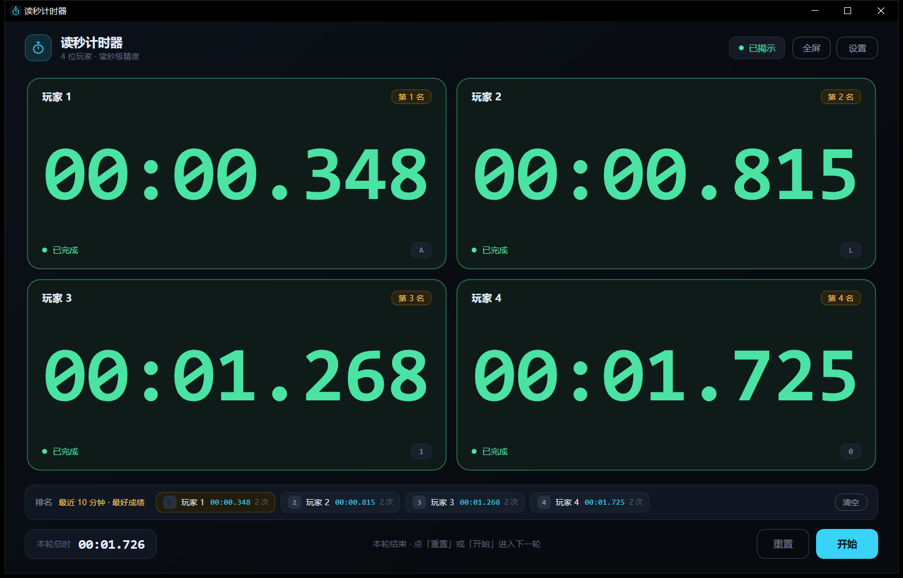
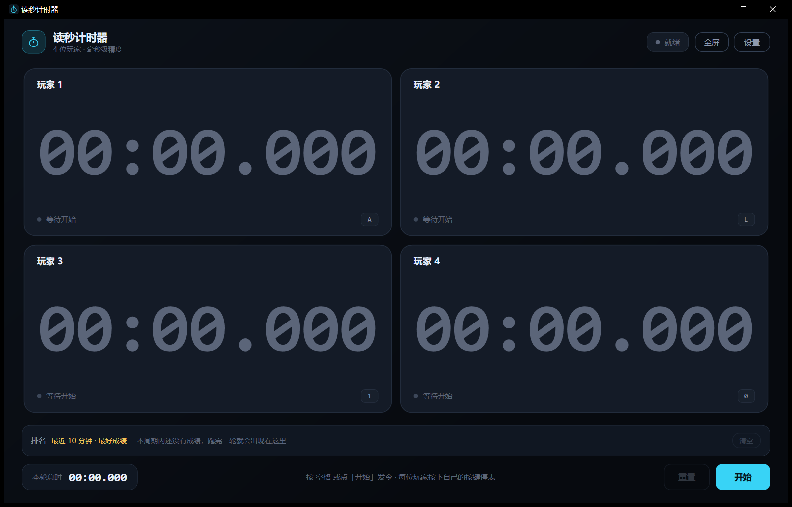
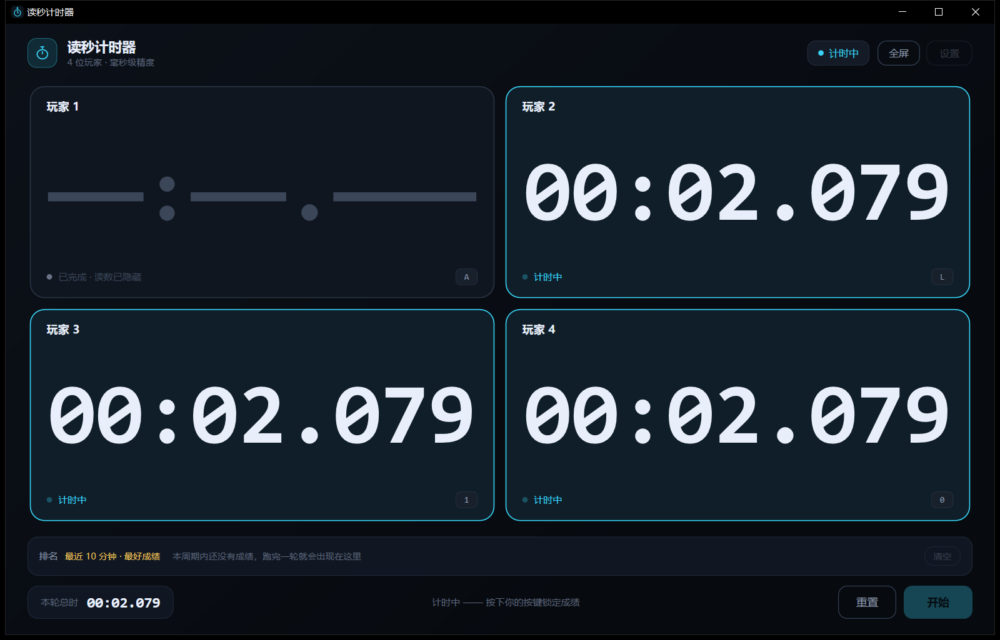
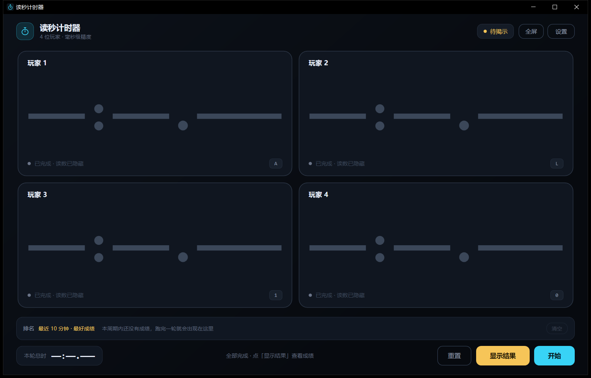
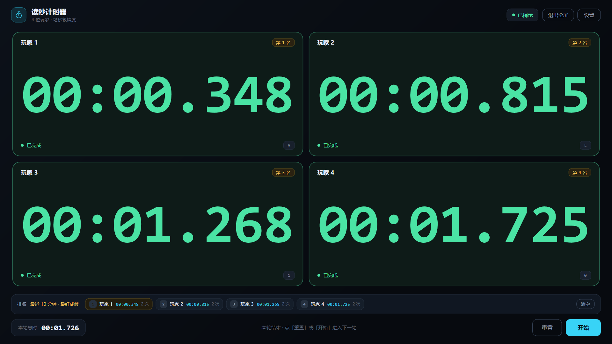
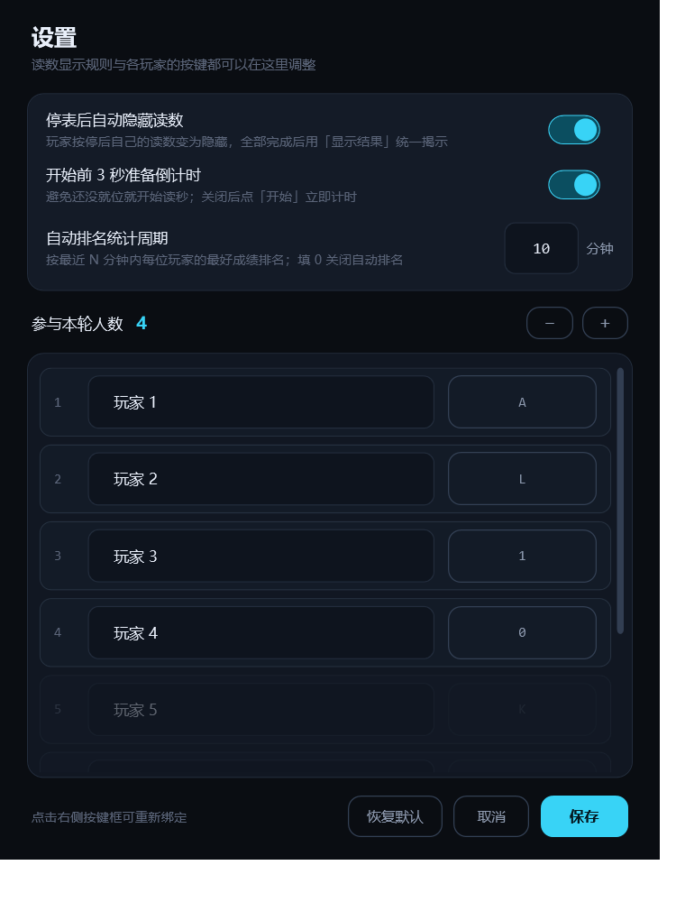

多人同场
毫秒级读秒计时
每位玩家一个按键、一份自己的读秒成绩。按停即刻锁定，读数自动隐藏； 全部完成后再由「显示结果」统一揭示。支持按自定义时间周期自动排名，适合课堂抢答、反应力比赛和现场投影。

为“同时开始、各自计时”设计
一套时钟、多个按键。谁先按停谁的成绩先锁定，但读数是否公开由你决定。
毫秒级精度
成绩在按键按下的瞬间取值，界面只是每 16 ms 采样刷新，刷新频率不影响读数。
按停即隐藏
玩家按停后自己的读数换成灰色封条，避免后来者参考；全部完成后一键统一揭示。
按周期自动排名
只统计最近 N 分钟内的最好成绩并排名，跨轮累计；把周期留空或填 0 即关闭自动排名。
全屏与投影
顶栏「全屏」按钮或 F11 进入，Esc 或「退出全屏」按钮返回；读数随窗口等比放大。
按键全部自定义
每位玩家可以绑定任意键（字母、数字、小键盘都行），保存时自动拦截重复键。
配置与榜单落盘
设置与排名成绩保存在 %AppData%\SplitTimer，关掉再开仍可续上本轮周期；配置写坏会自动退回安全值。
排名不再只看这一轮，而是看一段时间
在设置里填写「自动排名统计周期（分钟）」，程序只取该周期内每位玩家的最好成绩排名，轮次之间自动累计。
怎么算
每轮成绩揭示后写入榜单，带时间戳。排名时先按周期筛掉过期成绩，再取每位玩家的最低值排序；同成绩并列同名次。
卡片右上角的名次与底部「排名」条都来自这份结果，因此多人多轮之后仍能看出谁在这一段时间里最稳。
怎么关
周期填 0 或留空即为关闭自动排名：不写入榜单、不显示任何名次，只保留本轮读数。
示例：最近 10 分钟内两轮成绩合并后的排名。第一名用金色徽标突出，右侧「清空」可重置当前周期。
四个状态，一眼看懂谁在计时
等待为灰、计时中为青色呼吸点、已完成为绿色、隐藏为灰色封条。




键位与操作
默认四位玩家的按键是 A / L / 1 / 0，均可在设置里改。
| 按键 | 作用 |
|---|---|
| 空格 / Enter | 就绪或已结束状态下发令开始新一轮 |
| A / L / 1 / 0 | 玩家 1–4 的停表键（可在设置中改为任意键） |
| F11 | 进入 / 退出全屏 |
| Esc | 全屏时退出全屏；准备倒计时中取消本轮 |
| 设置 → 自动排名统计周期 | 填写分钟数开启排名，填 0 关闭 |
下载与历史版本
每次代码更新都会由 GitHub Actions 自动构建、打标签并发布新的版本，历史版本一直保留在 Releases 里。
v1.1.0
最新 2026-11-12- 排名改为按自定义时间周期统计：只取最近 N 分钟内的最好成绩，跨轮累计
- 新增关闭自动排名：周期填 0 即不显示名次、不写榜单
- 新增顶栏「全屏 / 退出全屏」按钮（保留 F11 与 Esc）
- 新增底部排名条与「清空」按钮，名次与成绩一屏可见
需要更早的版本？打开 Releases 页面，
每个标签（v1.1.0 起）都附带可直接运行的 SplitTimer.exe；
也可以从 Tags 查看对应的源码快照。
三步跑起来
下载 SplitTimer.exe，放到任意目录（单文件、自带运行时，不需要装 .NET）。
运行。首次启动如果弹出 SmartScreen 提示，点「更多信息 → 仍要运行」即可，程序未做代码签名。
设置：确认人数、为每位玩家绑定按键、按需要填写自动排名周期（0 表示关闭），然后保存。
